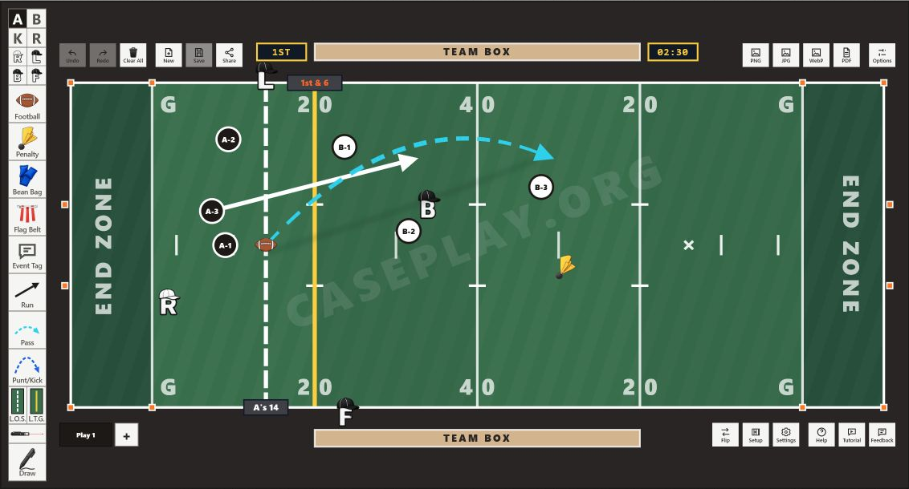
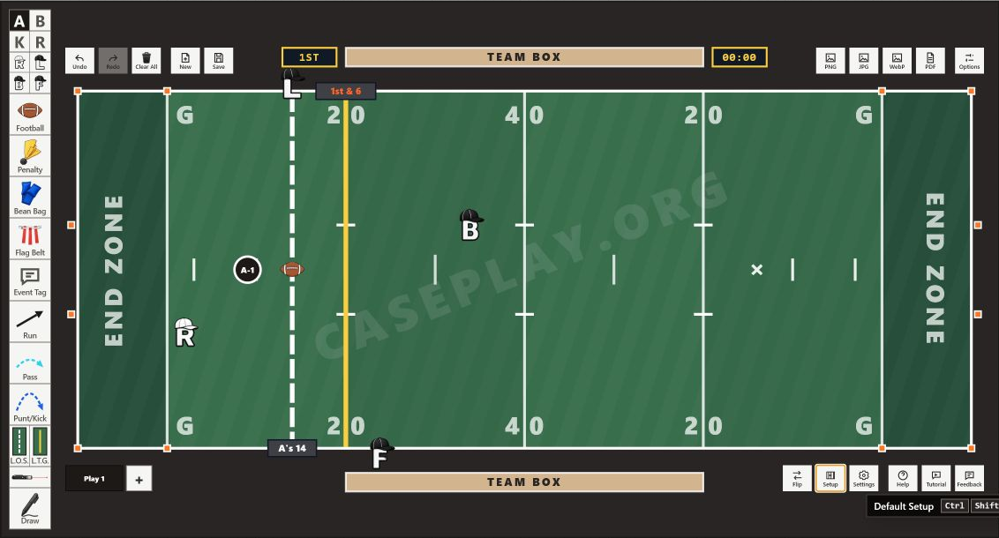
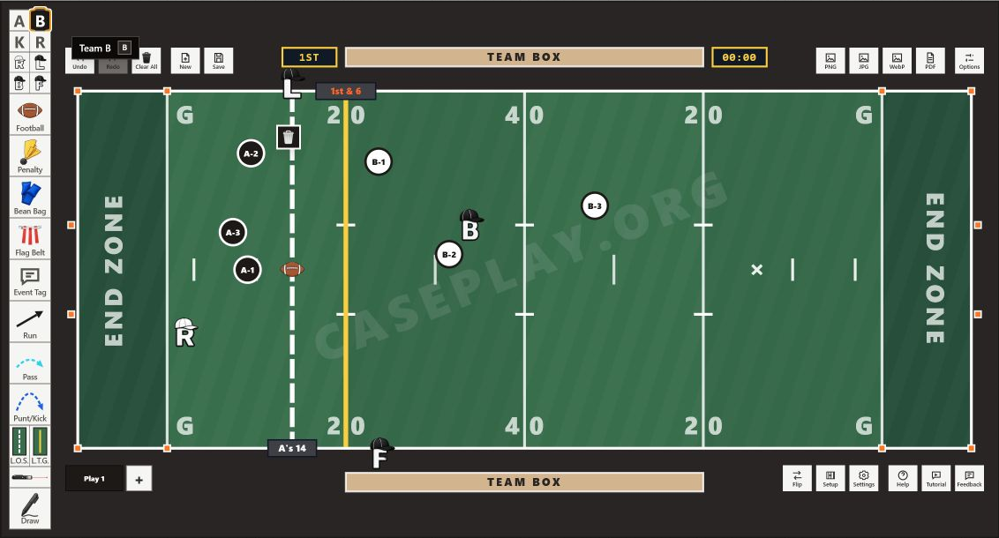
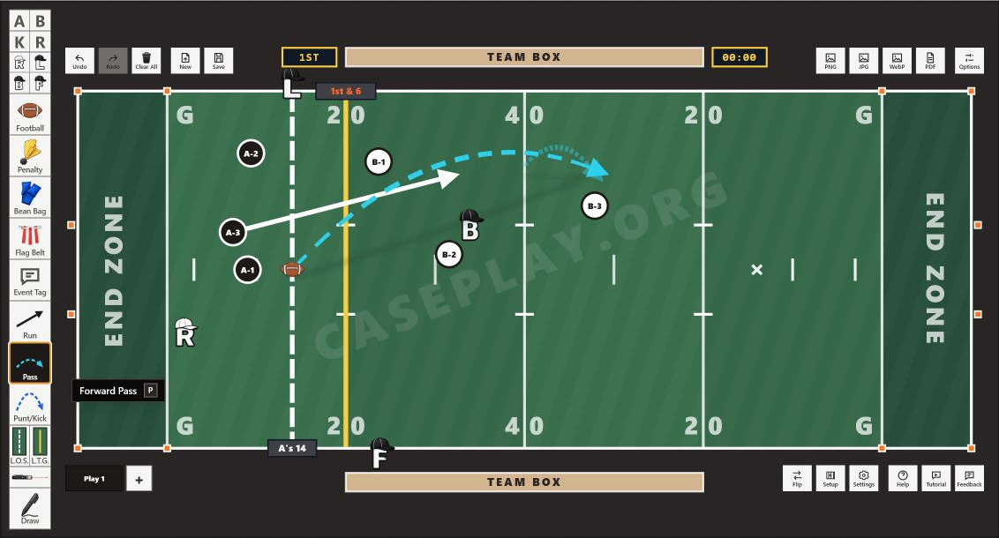
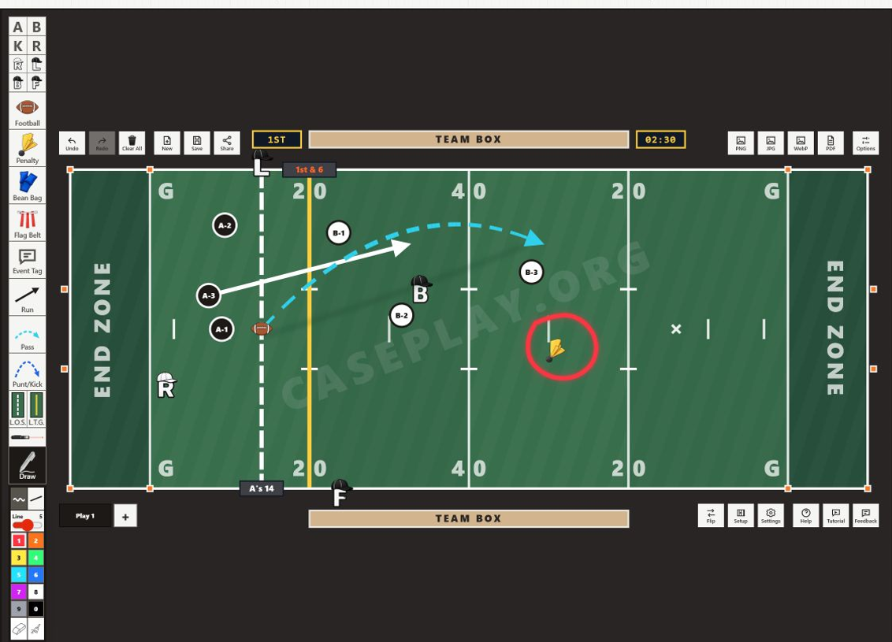
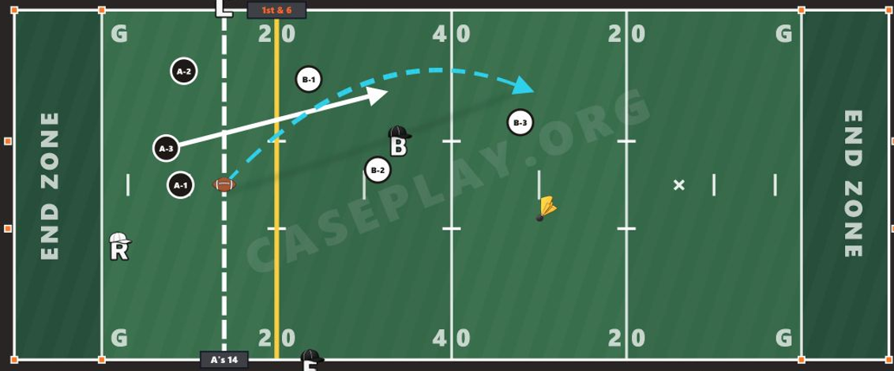
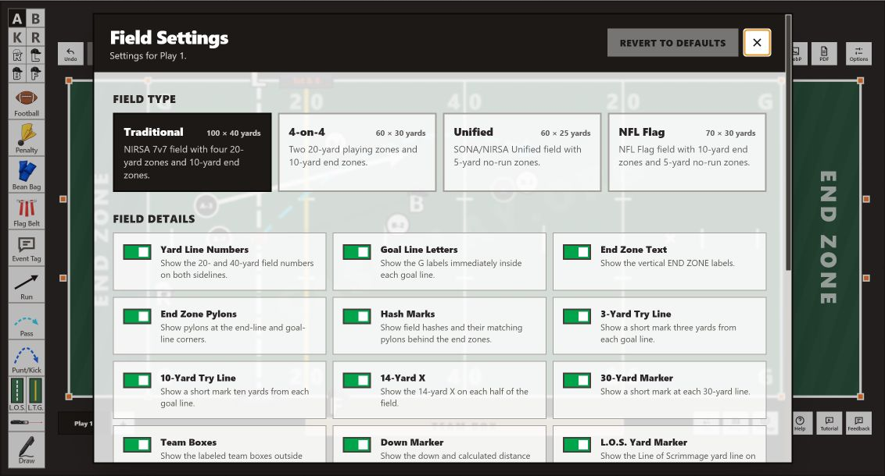

A new tool on CasePlay.org
See the Play: Introducing the Flag Football Play Builder
Some flag football plays are difficult to explain for a simple reason: too much happens at once.
A rule can be clear. The play can still be hard to picture.
A formation shifts. A receiver crosses the field. The ball changes location. A flag lands at one spot while the end of the run happens somewhere else.
Text can describe every part correctly and still leave two people imagining two different plays.
Sometimes the missing piece is not another sentence. It is a picture.
Where CasePlay.org fits
CasePlay.org already gives sports case plays an organized, searchable home. A reader can find a scenario, study the prompt, and think through the ruling before revealing the answer hidden behind the spoiler.
That makes the site useful for rules study, officiating education, and discussion. It also makes a visual tool a natural next step.
Case plays give us the words.
Now, we can build the play.
Meet the Flag Football Play Builder
The Flag Football Play Builder is a browser-based diagramming workspace for constructing flag football situations visually.
Start with a field. Place players, officials, the football, and a penalty marker. Set the line of scrimmage and line to gain. Then add movement with run and pass arrows, or annotate the field with free drawing and a laser pointer.
It does not decide the ruling. It gives everyone a common view of the play so the ruling can be studied, taught, and discussed more clearly.

Who is it for?
The builder is meant for people who need to make a play understandable before they can make it useful.
- A clinician can prepare a visual before a training session and keep the conversation centered on the same formation and sequence.
- An official can diagram an unusual situation, share the link, and ask other officials what they see.
- An officials trainer or rules educator can show positioning, movement, and the location of important events instead of relying on a paragraph alone.
- An intramural professional or tournament staff member can create a diagram for crew review or presentation material.
- A case-play author can build a visual companion to a written scenario without turning the diagram into the answer.
Build one example, step by step
The fastest way to understand the tool is to use it. The example below is a neutral passing-play illustration. It shows a formation, movement, a pass path, defenders, and a marked point for discussion. It does not make a rules claim.
-
Open the builder
Visit caseplay.org/play-builder. You can begin with the blank field or use Setup to place a practical starting group: the line of scrimmage, line to gain, an offensive player, the football, and the initial official positions.

-
Add the people and objects that matter
Choose a team button, then click the field to place a player. The live toolbar also provides official positions, a football, and game-event markers. A selected item can be removed with the small trash control that appears beside it.
-
Arrange the formation
Drag placed players and markers to the locations you want. In this example, three Team A players and three Team B players are arranged around the line of scrimmage, with the football and officials still visible.

-
Now add movement
Select the run-arrow or forward-pass tool and drag across the field. In the example, a solid white run arrow shows a receiver’s path while a dashed cyan arrow shows the path of the pass.

-
Mark the point worth discussing
Place a penalty marker where the event occurred. For live explanation, the free-draw controls provide colors, line styles, thickness, an eraser, and a clear-drawings action. The laser-pointer mode offers another way to direct attention during a discussion.

-
Refine without starting over
Use Undo and Redo as the play develops. Clear All removes the diagram, and that clear action can itself be undone. Flip mirrors the complete situation to the opposite side of the field. The period and game clock can also be set when that context matters.
-
Save it. Share it. Or export it.
Saving creates a shareable CasePlay.org address. The Share dialog provides the selected link and a QR code. The current export controls produce PNG, JPG, WebP, and PDF files, with a separate background option for exports.

What the finished visual makes clear
The example does not need to settle a ruling to be useful.
It establishes where the snap began. It separates the receiver’s movement from the path of the ball. It keeps the defenders visible. It marks the point the group should discuss. And it preserves the yard-line context around the play.
Now the conversation can begin from the same picture.
And it keeps getting more useful
The basic idea is simple: place the play on the field.
But the current builder also supports several flag-football field layouts. The tested settings include Traditional, 4-on-4, Unified, and NFL Flag fields, along with selectable field colors. The settings panel also presents controls for the visible field details.

The built-in guide explains the major player, official, field, drawing, saving, sharing, and export controls. That matters because the tool has enough depth to support a quick case-play sketch and a more deliberate clinic visual.
A shared diagram can support a forum question. An exported image can go into presentation slides. A saved builder can give a crew the exact play that inspired the discussion.
Built for today. Still being shaped.
The Flag Football Play Builder is in early development.
The current version is usable now, but controls, workflows, and visual details may change. Some parts will need more refinement. The tool is also intentionally a diagram builder—not a rules engine, simulation, or substitute for the rule book.
That is why feedback from people who teach, officiate, administer, and work with flag football matters now. The best next changes should come from real clinics, real crew conversations, and real moments when a play is still harder to explain than it should be.
Try it. Then tell us what is missing.
Open the Flag Football Play Builder
Please share bugs, confusing controls, missing tools, ideas for useful additions, and the ways you would use the builder in clinics or official development.
Feedback is welcome directly in this forum thread or by email at feedback@caseplay.org.
The goal is straightforward: make flag football plays easier to see, explain, discuss, and understand.